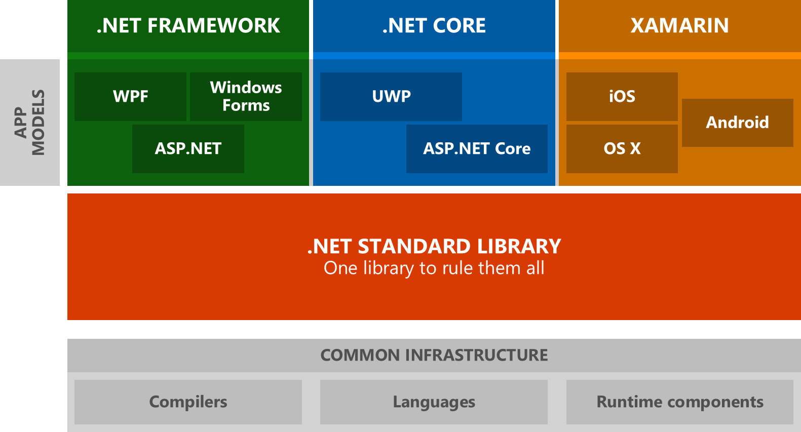
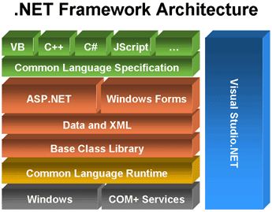
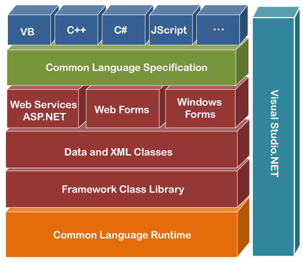
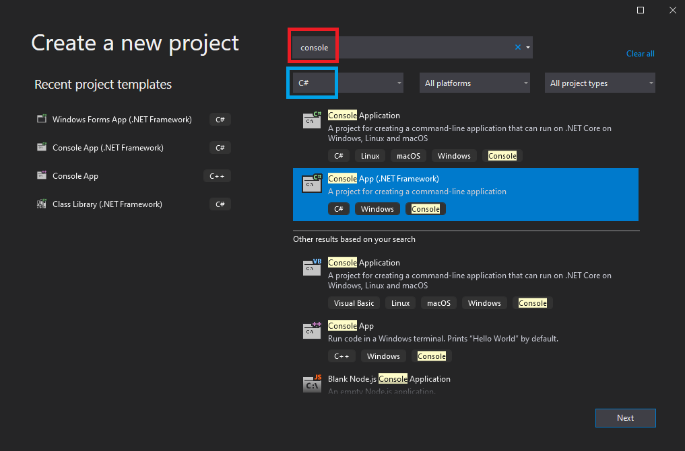
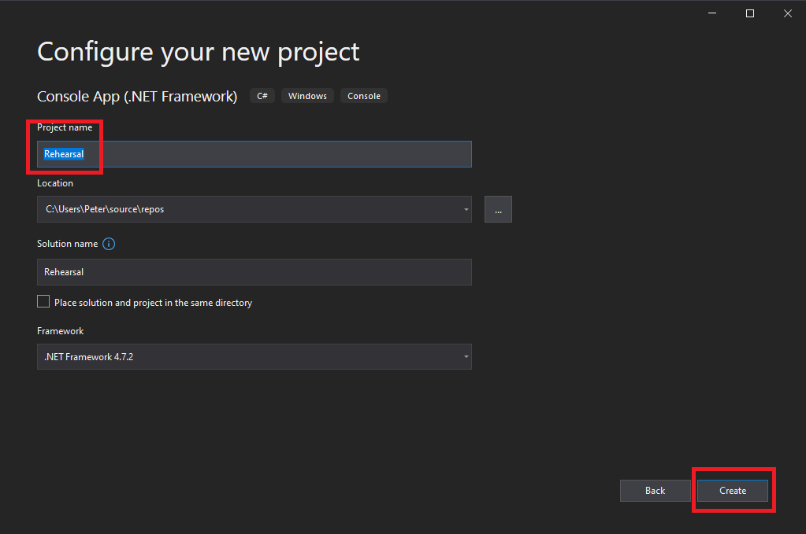
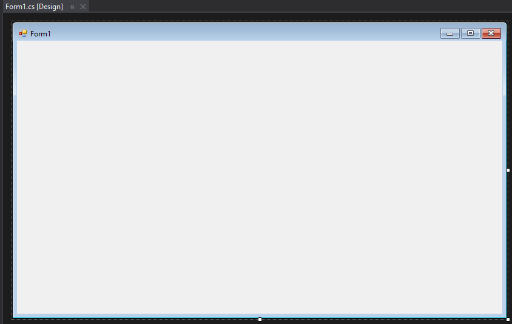

A témakör célja, hogy megismerkedjünk a C#-pal. Néhány alapvető fogalommal tisztában legyünk. Megértsük azt, hogy mire jó a .NET keretrendszer (framework). És felfedezzünk néhány olyan internetes felületet, amelyek a későbbiekben nagyon hasznosak lehetnek a számunkra.
- Mit lehet tudni alapvetően a C#-ról?
- munkaterhelés (workload) - a számítási erőforrások mennyisége és az az idő, amely egy feladat elvégzéséhez vagy egy eredmény generálásához szükséges. Minden számítógépen futó alkalmazás vagy program munkaterhelésnek tekinthető.
- szemétgyűjtés (Garbage Collection) - memóriakezelés
- kivételkezelés (Exception Handling) - felmerülő hibák kezelése
- nullázható típusok (Nullable Types) - minden típushoz tartoznia kell memóriaterületnek, ha más nem akkor a speciális null érték
- lambda kifejezés (Lambda Expression) - funkcionális programozási szemlélethez
- LINQ (Language Integrated Query) - adatkezelés bármilyen forrásból
- aszinkron műveletek (Asynchronous Operations) - elosztott rendszerek kezelése, többszálúság
- Mire jó a .NET keretrendszer (framework)?
- A Visual Studio 2019/2022 Community fejlesztőkörnyezet.
- Konzolos alkalmazás létrehozása.
- Grafikus alkalmazás létrehozása.
A C# egy platformfüggetlen (cross-platform), objektumorientált (object-oriented), komponensorientált (component-oriented) és típusbiztos (type-safe) programozási nyelv, amely a .NET keretrendszerre (framework) épül.
Nézzünk említés szintjén néhány fogalmat:
Minden típus egy object gyökértípusból öröklődik. A felhasználók is létrehozhatnak új típusokat.
A C# nyelvet a Microsoft fejleszti. Az első verzió (C# 1) 2002-ben jött ki. A jelenlegi legfrissebb verzió a C# 11 2022-ben került használatba.
A C# állományok kiterjesztése ".cs".
Egy C# program a .NET-en fut, ami alapból egy közös nyelvi futtatókörnyezetből (CLR - Common Language Runtime) és egy beépített osztálykönyvtár-halmazból (BCL - Basic Class Library vagy FCL - Framework Class Library) áll.
A CLR a Microsoft megvalósítása a CLI-nek (Common Language Infrastructure), egy nemzetközi szabványgyűjteménynek, amely leírja egy futtató- és fejlesztői környezetnek a felépítését, hogy a hasonló nyelvek és könyvtárak zökkenőmentesen működhessenek együtt rajta.



A C# forráskód lefordul egy IL-nek (Intermediate Language) nevezett kódra, amely megfelel a CLI-nek. Ez a kód, plusz néhány egyéb információ egy úgynevezett szerelvénybe (assembly) kerül eltárolásra legtöbbször .dll, vagy .exe kiterjesztéssel. Ez a szerelvény tartalmaz egy szerelvényjegyzéket (manifest) lényeges információkkal a szerelvény típúsáról, verziójáról és kultúrájáról (culture).
Mikor futtatjuk a C# programot, akkor ezt a szerelvényt betöltjük a CLR-be, amely végrehajt rajta egy JIT (Just-In-Time) fordítást, aminek az eredménye egy natív gépi kód.
A CLR mindezek mellet szemétgyűjtést, kivételkezelést és erőforráskezelést (resource management) is biztosít. Az így létrejött gépi kódot menedzselt kód-nak (managed code) is nevezik.
A C# forráskódból kapott IL kód eleget tesz a CTS-nek (Common Type Specification) és a CLS-nek (Common Language Specification). Ennek köszönhetően egy F#-ban, C++-ban vagy Visual Basic-ben megírt forráskód IL kódja is belekerülhet ugyanabba a szerelvénybe. Kötülbelül 20 CTS kompaticilis nyelv létezik.
A BCL-ben vagy az FCL-ben lévő nagy mennyiségű könyvtárakat névterek-be (namespace) szervezik.
Most, hogy néhány fogalommal megismerkedtünk a C# fejlesztés világából, folytassuk az ismerkedést a legfontosabb területtel, a fejlesztői környezettel (IDE). Ehhez a Visual Studio 2019 Community Edition-t fogjuk használni. Kint van már a 2022-es verzió is, de pillanatnyilag nekünk elég lesz csak a 2019-es. Ami ebben megoldható, az megoldható az újabb verzióban is.
A Visual Studio 2019/2022 Community használatához érvényes Microsoft fiókkal kell rendelkezni! Mindenki hozzon létre egyet, ha még nincs!
A mellékelt videó-hoz kapcsolódóan csak annyit, hogy kezdetben csak a .NET desktop development-re van szükségünk, így csak azt jelöljük be, ezzel spórolva a háttértárral! Ha kell a későbbiekben valami, azt is könnyen telepíthejük az Visual Studio Installer segítségével, ami a szerkesztővel együtt települ a gépünkre.
Indítsuk el a Visual Studio 2019 alkalmazást. Majd kattintsunk a Create a new project gombra!

Ezután a megnyíló ablakba írjuk be a console kifejezést a keresőbe és válasszuk ki a nyelvek közül a C#-ot, és a .NET Framework-os verziót:

Adjunk nevet a projektünknek, állítsuk be a mentés helyét, majd nyomjuk meg a Create gombot!

Írjuk be a 13-14. sort, majd nyomjuk meg a kis zöld jobbra mutató háromszöget. A megnyíló konzolon láthatjuk a kiírást.


A Console.ReadKey(true); sorra azért van szükség, hogy a konzol ablaka ne zárodjon be azonnal.
Megjegyzés a forráshoz:
A .NET Core-t ajánlja a projekthez, de mi maradjunk a .NET Framework-nél!
Indítsuk el a Visual Studio 2019 alkalmazást. Majd kattintsunk a Create a new project gombra!
Ezután a megnyíló ablakba írjuk be a windows forms kifejezést a keresőbe és válasszuk ki a nyelvek közül a C#-ot, és a .NET Framework-os verziót:

Adjunk nevet a projektünknek, állítsuk be a mentés helyét, majd nyomjuk meg a Create gombot!
Megkapjuk az alap winform-os kezdő űrlapunkat (form).

Elkezdhetjük felpakolni a különböző vezérlőelemeket.